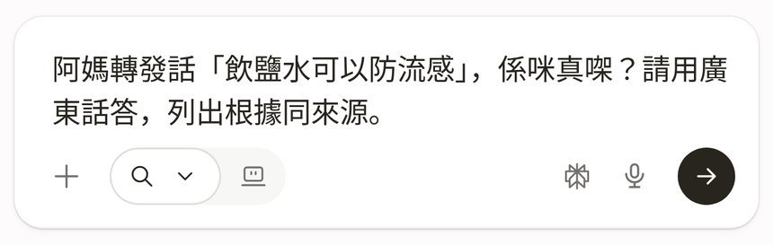
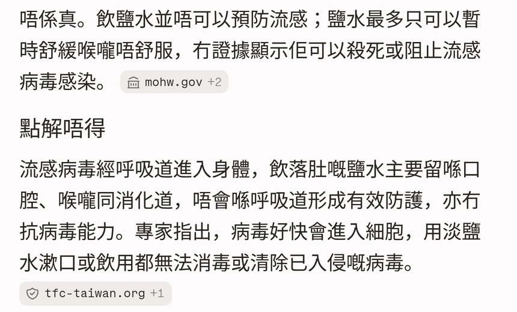
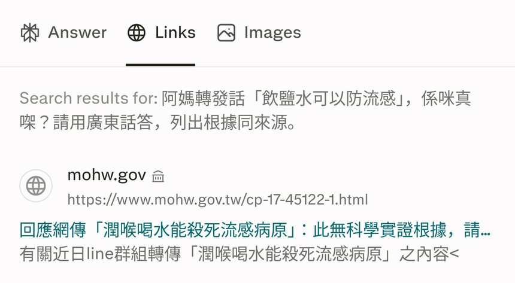

阿媽或者長輩轉發一句「喝鹽水可以防流感」，有人寫「飲鹽水防流感」。第43集用 perplexity.ai，唔使登入：composer 見「Ask anything…」，貼廣東話問題，撳右下角黑色圓箭送出，睇第一句結論同「點解唔得」，再撳「Links」逐個來源入原文。示範轉發係拍片用，無真實受害人。下面三張逐步圖係暫用早前畫面，Ep.43 開拍之後要換。
Reel 一句講晒：Perplexity｜喝鹽水防流感／秘方真假
唔係醫療建議：AI 可能錯。呢頁唔係醫療建議，亦唔係叫你照轉發去做。健康以香港衞生署、衞生防護中心同醫生為準。示範虛構轉發，無真實受害人。
暫用逐步圖：三張圖抄自 perplexity-myth-check 2026-10-07 拍攝，檔名同畫面都未換。圖入面仍然寫「飲鹽水」，來源標籤見到其他地方嘅網域。以當日 Links 畫面為準，唔好當醫療結論。第43集開拍後換圖。
你會學到
- 點樣喺 perplexity.ai 唔登入，喺「Ask anything…」問秘方真假，並要求廣東話同來源
- 點樣睇答案第一句結論同「點解唔得」，而唔好停喺第一句
- 點樣撳「Links」，優先對香港衞生署或者衞生防護中心嘅原文
開始前準備
- 瀏覽器開 perplexity.ai。示範冇登入。官方說明寫唔登入只用到部分功能；Pro Search、上載檔案、儲存對話要登入
- 只貼轉發嗰句講法。電話、地址、病歷先遮走。示範用「喝鹽水可以防流感」／「飲鹽水防流感」，無真實受害人
- 預留幾分鐘撳入來源原文。未核對之前，唔好叫屋企人照做或者照轉發
可抄提示
示範提示（虛構轉發，無真實受害人）
阿媽／長輩轉發話「喝鹽水可以防流感」（有人寫「飲鹽水防流感」），呢個秘方係咪真㗎？請用廣東話答，先講結論，再列出根據同來源。優先引用香港衞生署或衞生防護中心。示範轉發虛構，無真實受害人。
你自己用就換上已遮走個人資料嘅轉發原文。出嚟嘅答案要自己讀，再撳入來源。AI 加咗你冇叫佢講嘅劑量、偏方、藥名，先當加料，唔好轉發。
換成其他健康轉發
我收到轉發話「（貼上轉發原文）」，呢個秘方係咪真㗎？請用廣東話答，先講結論，再列出根據同來源。優先引用香港衞生署或衞生防護中心。示範轉發虛構，無真實受害人。
3 步做法
免登入開 perplexity.ai。空白輸入位寫「Ask anything…」。送出掣係右下角黑色圓箭，按鈕面無字。答案上面有 Answer 同 Links。下面三張係暫用介面參考，畫面日期係 2026-10-07，唔係 2026-10-25 當日拍攝。
-
打問題撳送出：喺「Ask anything…」貼上面嗰段。講明用廣東話、先講結論、列出根據同來源，並優先香港衞生署或衞生防護中心。貼好再撳右下角黑色圓箭。
未撳之前再睇一次：冇真實電話、地址、病歷。示範句係虛構轉發。
暫用圖仍然顯示早前嗰句「阿媽轉發話『飲鹽水可以防流感』…」。第43集可抄提示寫「喝」同「飲」兩個講法。開拍後換一張打咗新提示嘅畫面。

暫用介面參考（第43集預定 2026-10-25 12:00；圖來自 2026-10-07 perplexity-myth-check，Ep.43 開拍後要換）：問題打好，右下角黑色圓箭。圖內係「飲鹽水」舊提示，呢頁可抄提示已寫「喝／飲」。 -
睇結論同點解：等答案出齊。先睇第一句結論，再睇下面「點解唔得」逐點。每段尾有來源標籤，標籤本身唔算核實完成。
暫用圖第一句寫住「唔係真。飲鹽水並唔可以預防流感」，跟住小標題「點解唔得」。來源標籤見到 mohw.gov、tfc-taiwan.org.tw，係其他地方嘅網域。以當日 Links 畫面為準，唔好當醫療結論。
AI 可能錯。呢頁唔係醫療建議。健康以香港衞生署、衞生防護中心同醫生為準。未撳入原文之前，唔好將呢句轉發返俾長輩。

暫用介面參考（第43集預定 2026-10-25 12:00；圖來自 2026-10-07，Ep.43 開拍後要換）：見到結論句同「點解唔得」。標籤係其他地方網域。以當日 Links 畫面為準，唔好當醫療結論。 -
撳 Links 核來源：答案上面撳「Links」（喺 Answer 右邊，英文介面）。逐個來源撳入原文，睇係咪講緊「喝鹽水防流感」、文章幾時出、係邊個機構。
暫用圖第一條係 mohw.gov，標題係台灣衞生福利部流感防治網。優先再搵香港衞生署或衞生防護中心嘅頁。其他地方嘅網域可以當參考，唔好當香港醫療結論。
對完先決定回覆長輩。回覆如果叫人喝濃鹽水、包醫、或者話唔使疫苗，而防護中心原文冇寫，就唔好轉發。

暫用介面參考（第43集預定 2026-10-25 12:00；圖來自 2026-10-07，Ep.43 開拍後要換）：Links 第一條係 mohw.gov。以當日 Links 畫面為準，唔好當醫療結論。優先對香港衞生署／衞生防護中心。
常見錯誤／注意事項
- 淨係睇第一句：結論之後嘅「點解唔得」同 Links 先係核實。未撳入原文，唔好當事實。
- 當 AI 答案係醫療建議：AI 可能錯。呢頁唔係醫療建議。健康以香港衞生署、衞生防護中心同醫生為準。
- 將其他地方嘅網域當香港結論：暫用圖見到 mohw.gov、tfc-taiwan.org.tw。以當日 Links 畫面為準。優先對衞生署同防護中心。
- 混淆漱口同喝鹽水：防護中心「傷風及流行性感冒」頁寫用半茶匙鹽沖一杯暖水漱口，用來減輕徵狀。轉發講嘅「喝鹽水防流感」係另一句。邊句適用，以當日原文同醫生為準。
- 唔講明要來源同廣東話：提示寫「請用廣東話答」同「列出根據同來源」，答案先易啲標出處。
- 以為唔登入乜都用得：官方說明寫唔登入只用到部分功能。Pro Search、上載檔案、儲存對話要登入。以你當日畫面為準。
- 當示範係真實個案：轉發句子係拍片用，無真實受害人。真實病歷、電話、地址先遮走。
AI 可能錯。呢頁唔係醫療建議。健康以香港衞生署／醫生為準。示範虛構轉發，無真實受害人。
香港用戶留意
示範用瀏覽器開 perplexity.ai，冇裝 App，免登入。輸入位寫「Ask anything…」。送出係右下角黑色圓箭。來源分頁寫「Links」。流感預防、疫苗同幾時求醫，睇衞生防護中心季節性流感頁，再問醫生。密碼喺網頁（個人檔連結）。
官方說明
- 季節性流行性感冒（衞生防護中心）
2026-10-24 打開回 200。頁面講病原、病徵、疫苗、手部衞生，以及病徵持續或惡化要盡快求診。健康結論以呢頁同醫生為準，唔好以 AI 摘要代替 - 傷風及流行性感冒（衞生防護中心）
2026-10-24 打開回 200。頁面寫每天用半茶匙鹽沖一杯暖水，漱口三次或以上，用來減輕徵狀。呢句係漱口。轉發「喝鹽水防流感」要同呢句分開睇，以當日原文為準 - How does Perplexity work?（Perplexity Help Center）
同早前 perplexity-myth-check 頁用同一條說明（該頁寫 2026-10-08 核對：答案附引用，方便你自己核對）。介面以你當日畫面為準 - Understanding source labels（Perplexity Help Center）
同一頁早前核對：來源標籤係按網站評，唔係逐頁保證。見到政府標籤都要撳入原文 - Account Management and Security（Perplexity Help Center）
同一頁早前核對：唔登入都用得，但只得部分功能；Pro Search、上載檔案、儲存對話要登入
（衞生防護中心兩頁當日打開。逐步圖暫用 2026-10-07 畫面，Ep.43 開拍後要換。Perplexity 三條說明沿用早前核對過嘅 Help Center 連結。介面可能更新，以你當日畫面同官方為準）
原帖
預定 2026-10-25 12:00 發佈。Share 之後先補 Instagram 連結。呢頁未接 shortcode。